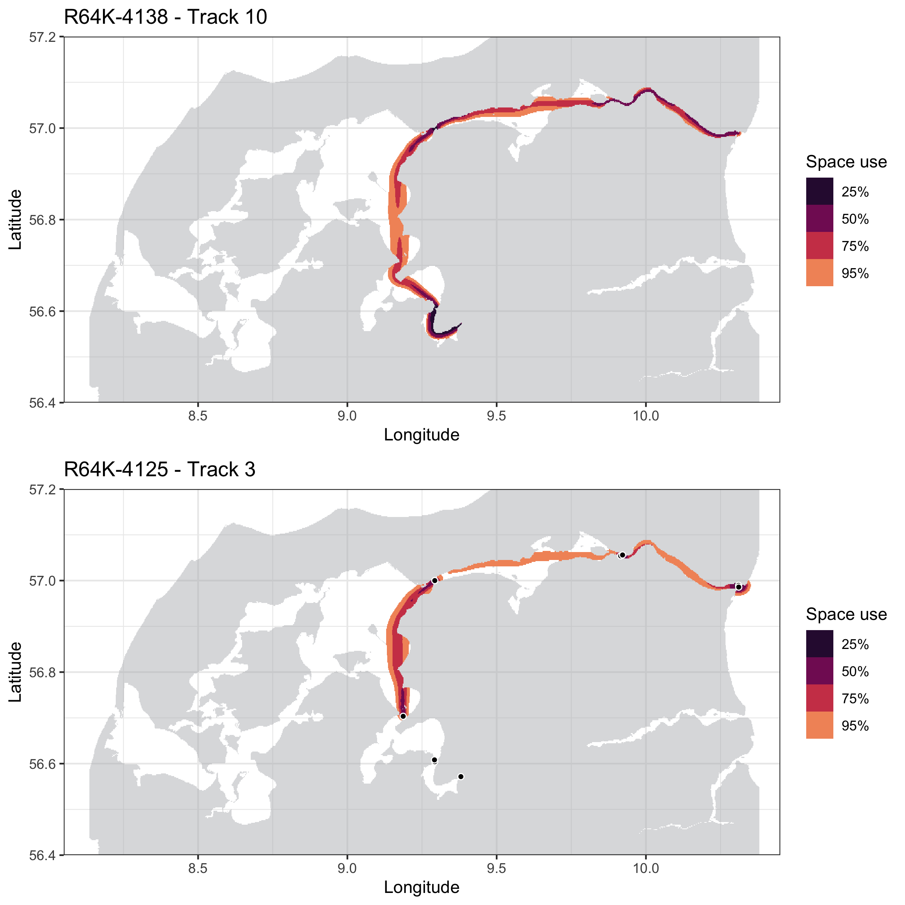
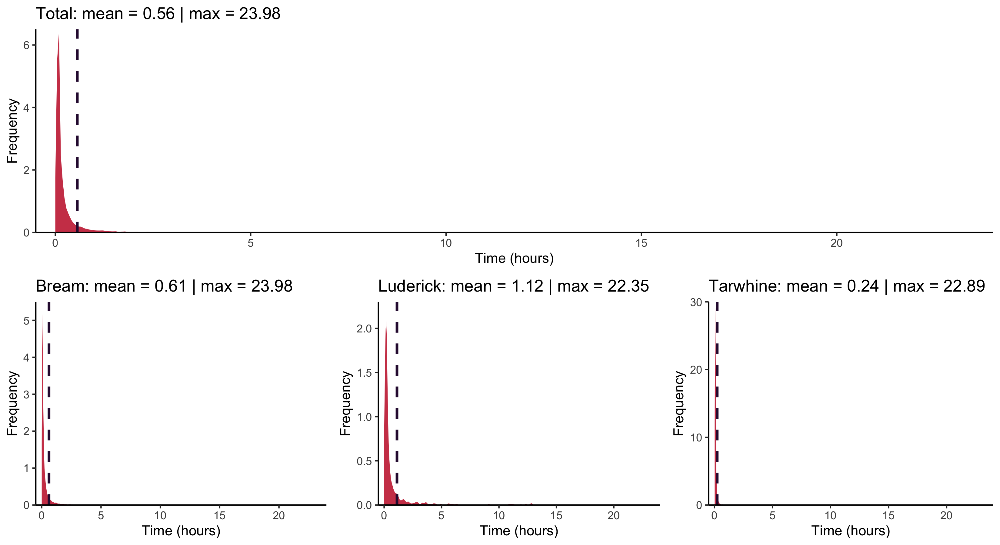
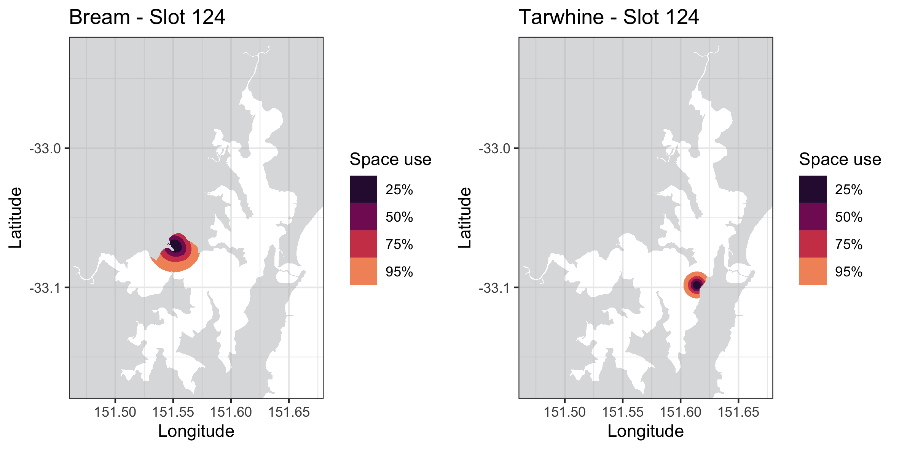
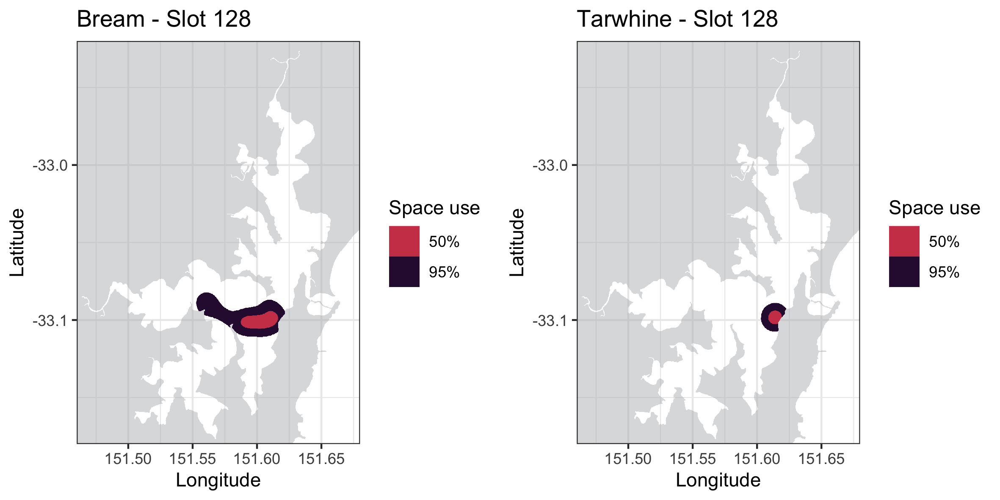
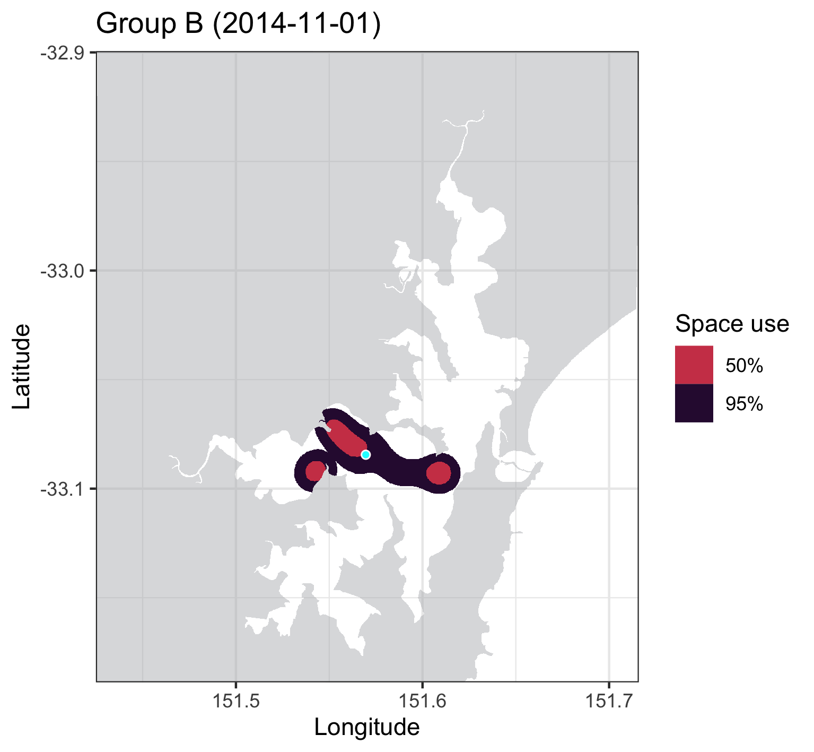

vignettes/a-3_dBBMM.Rmd
a-3_dBBMM.RmdAfter estimating the in-water shortest paths, we can now use the
output from runRSP() to calculate utilization distribution
areas using dynamic Brownian Bridge Movement Models
(dBBMM) with the dynBBMM() function. If you are using a
geographic coordinate reference system, here you will need to know the
UTM zone of your study
site and specify it using the argument UTM. By default, the
analysis will run for all transmitters detected, but you can determine
also which transmitters you would like to include using
tags.
A common error you might get when calculating dBBMMs is that the model does not have enough space to perform its calculations. This can happen when your stations are near to the edges of your base raster. When calculating the space use areas, the dBBMM contours might hit these edges causing the algorithm to crash and stop:
dbbmm.results <- dynBBMM(input = rsp.results, base.raster = water.shape)
Error: The brownian bridge model needs a larger raster to work on. This could happen because some of the detections are too close to the raster's edge.
You can create a larger raster by using the argument 'buffer' in loadShape. If the error persists, increase the buffer size further.This can be fixed simply by increasing the size of your base raster
using the argument buffer in the function
loadShape(). The buffer argument can take one value (which
is applied to all directions), or four values (xmin, xmax, ymin, ymax).
Remember to provide a buffer in metres for metric shapefiles, and in
degrees for geographic shapefiles:
water.large <- loadShape(shape = "my_study_areas.shp", size = 0.0001, buffer = 0.05) This option calculates a series of dBBMM for each animal track from
all the groups monitored and included in the runRSP()
analysis. Track quality checks are performed to ensure
that only good tracks are used, which will allow the dBBMM to converge
properly. This is an example of the returned messages from
dynBBMM():
dbbmm.results <- dynBBMM(input = rsp.results, UTM = 32, base.raster = water.large)
M: Converting coordinates to UTM. Original latitude/longitude values for the detections will be stored in columns 'O.LAT' and 'O.LON'.
M: Preparing data to apply dBBMM.
M: No specific transmitters selected. All the data will be used for analysis.
Warning: 7 track(s) in group R64K-4075 have less than eight detections and will not be used.
Warning: 1 track(s) in group R64K-4075 are shorter than 30 minutes and will not be used.
Warning: 2 individual detections were removed in group R64K-4125 due to simultaneous detections at two receivers.
Warning: 1 track(s) in group R64K-4125 have less than eight detections and will not be used.
Warning: 1 track(s) in group R64K-4128 have less than eight detections and will not be used.
Warning: 2 track(s) in group R64K-4128 are shorter than 30 minutes and will not be used.
Warning: 6 track(s) in group R64K-4138 have less than eight detections and will not be used.
M: In total, 93 detections were excluded as they failed the track quality checks.verbose to FALSE. You will still receive one single message
indicating how many detections were excluded in total. After calculating
UDs, the land areas are excluded so that the final
results represent only in-water areas of use.
dbbmm_all <- dynBBMM(input = rsp.data, UTM = 32, base.raster = water.large, verbose = FALSE)
M: Converting coordinates to UTM. Original latitude/longitude values for the detections will be stored in columns 'O.LAT' and 'O.LON'.
M: Preparing data to apply dBBMM.
M: No specific transmitters selected. All the data will be used for analysis.
M: In total, 93 detections were excluded as they failed the track quality checks.
M: Calculating dBBMM: R64K-4075
M: Success! (Time spent: 00:00:06)
M: Calculating dBBMM: R64K-4125
M: Success! (Time spent: 00:01:07)
M: Calculating dBBMM: R64K-4128
M: Success! (Time spent: 00:00:10)
M: Calculating dBBMM: R64K-4138
M: Success! (Time spent: 00:00:43)
M: Subtracting land areas from output.The metadata on the tracks used for the dBBMMs is saved in the
$valid.tracks object as a data frame:
| Group | Tag | Track | valid.n | First.time | Last.time | Timespan |
|---|---|---|---|---|---|---|
| A | R64K-4075 | Track_03 | 125 | 2018-03-07 00:41:10 | 2018-03-07 08:20:02 | 7.64 hours |
| A | R64K-4075 | Track_08 | 27 | 2018-04-23 05:10:47 | 2018-04-23 08:43:45 | 3.54 hours |
| A | R64K-4075 | Track_09 | 303 | 2018-04-24 11:40:56 | 2018-04-26 01:00:13 | 37.32 hours |
| B | R64K-4125 | Track_02 | 206 | 2018-04-21 13:13:24 | 2018-04-23 09:09:34 | 43.93 hours |
| B | R64K-4125 | Track_03 | 1118 | 2018-04-25 11:44:05 | 2018-04-28 14:10:14 | 74.43 hours |
Included is information on the biological group (Group) tracked, number of valid detections (valid.n) used, and the duration of each model (Timespan) in hours.
You can use plotContours() to visualize any of the dBBMM
calculated by specifying the tag and track you
want to plot:
plotContours(input = dbbmm_all, tag = "R64K-4138", track = 10)
plotContours(input = dbbmm_all, tag = "R64K-4125", track = 3)
The breaks argument can be used to specify which
contours to plot. By default, the 25%,
50%, 75%, and 95%
contours are returned. Again, addStations() can be used to
add the station locations.
dBBMMs can also be calculated according to a fixed moving
temporal window. This allows investigating how space use
patterns varied in fine-scale. It is useful for assessing the influence
of environmental parameters upon space-use of different groups tracked
within the study area. The same dynBBMM() function is used,
but here the argument timeframe has to be defined
in hours as the temporal window of interest. The total
tracking period will be divided into timeslots, and dBBMMs
calculated for each group monitored (for each timeslot).
plotDensities() function to help you choose
the most suitable timeframe for dynBBMM(), to
make sure you won’t be mostly using exclusively interpolated locations
in your fine-scale analysis:
plotDensities(rsp.data) # All groups are simultaneously analysed by default!
plotDensities(rsp.data, group = "Bream")
plotDensities(rsp.data, group = "Luderick")
plotDensities(rsp.data, group = "Tarwhine")
On this plot, we can notice that most of the consecutive detections occurred at intervals of less than one or two hours for all groups combined (Total), and that Luderick was the group with longest mean detection intervals.
Now that we verified that most of the acoustic detections occurred
according below two hour time intervals (when the default
max.time of 24 hours was used in runRSP()),
setting up a timeframe argument longer than this value
should be safe for analysis. Let’s perform a fine-scale analysis using a
daily resolution (i.e. timeframe = 24):
dbbmm.time <- dynBBMM(input = rsp.data, UTM = 56, base.raster = water.shape, timeframe = 24, verbose = FALSE, start.time = "2014-07-01 00:00:00", stop.time = "2015-01-01 00:00:00")
M: Converting coordinates to UTM. Original latitude/longitude values for the detections will be stored in columns 'O.LAT' and 'O.LON'.
M: Discarding detection data previous to 2014-07-01 00:00:00 and posterior to 2015-01-01 00:00:00 per user command.
M: Preparing data to apply dBBMM.
M: No specific transmitters selected. All the data will be used for analysis.
M: Activating separate dBBMM calculations for each time slot.
M: In total, 60 detections were excluded as they failed the track quality checks.
M: Calculating dBBMM: Bream
|============================================================| 100%
M: Success! (Time spent: 00:15:29)
M: Calculating dBBMM: Tarwhine
|============================================================| 100%
M: Success! (Time spent: 00:03:07)
M: Subtracting land areas from output.Please note that you can run the analysis for only a time interval of
interest using the start.time and stop.time
arguments. Setting a start.time will cause all data
previous to this time to be excluded and, similarly, setting a
stop.time will exclude all the data posterior to the
specified time (you can choose to use only one of these two
arguments).
Metadata on the timeslots generated for the analysis is returned in
the $timeslots object:
| slot | start | stop |
|---|---|---|
| 1 | 2014-06-30 00:00:00 | 2014-06-30 23:59:59 |
| 2 | 2014-07-01 00:00:00 | 2014-07-01 23:59:59 |
| 3 | 2014-07-02 00:00:00 | 2014-07-02 23:59:59 |
| 4 | 2014-07-03 00:00:00 | 2014-07-03 23:59:59 |
| 5 | 2014-07-04 00:00:00 | 2014-07-04 23:59:59 |
| 6 | 2014-07-05 00:00:00 | 2014-07-05 23:59:59 |
And a new column will be included in the $valid.tracks
object, displaying the corresponding timeslot (Slot) that the dBBMMs
were calculated for. Notice how the valid tracks were partitioned to fit
in the defined timeframe (24 hours).
| Group | Tag | Track | Slot | valid.n | First.time | Last.time | Timespan |
|---|---|---|---|---|---|---|---|
| Bream | A69-9002-10473 | Track_7 | 1 | 103 | 2014-07-01 00:05:53 | 2014-07-01 12:54:03 | 12.8 hours |
| Bream | A69-9002-10473 | Track_7 | 2 | 121 | 2014-07-01 13:03:58 | 2014-07-02 06:02:47 | 16.9 hours |
| Bream | A69-9002-10473 | Track_8 | 13 | 105 | 2014-07-12 18:40:30 | 2014-07-13 12:55:45 | 18.2 hours |
| Tarwhine | A69-9004-489 | Track_3 | 128 | 280 | 2014-11-04 14:01:15 | 2014-11-05 13:53:22 | 23.8 hours |
| Tarwhine | A69-9004-489 | Track_3 | 129 | 243 | 2014-11-05 14:00:37 | 2014-11-06 13:56:15 | 23.9 hours |
| Tarwhine | A69-9004-489 | Track_3 | 130 | 98 | 2014-11-06 14:06:09 | 2014-11-07 13:52:10 | 23.7 hours |
You can again use plotContours() to visualize the
results of the timeslot dBBMM, by setting the timeslot
of interest:
plotContours(input = dbbmm.time, tag = "A69-9004-485", track = "4", timeslot = 124, title = "Bream - Slot 124")
plotContours(input = dbbmm.time, tag = "A69-9004-489", track = "3", timeslot = 124, title = "Tarwhine - Slot 124")
title
argument.
Now that you have dBBMMs you can calculate the areas used with the
getAreas() function, both at group or
track level, by using the type argument.
Group areas will correspond to the total areas used by all animals from
a particular group. When type = 'track', areas are
calculated for each animal track individually. Areas are stored in the
$areas object, as a list of dataframes for each tracked
group.
areas.group <- getAreas(input = dbbmm.time, type = "group")
areas.group$areas$Bream| Slot | Area.5 | Area.95 |
|---|---|---|
| 1 | 974333.6 | 4310814 |
| 2 | 1218435.9 | 6141996 |
| 13 | 3037994.5 | 12030757 |
| 14 | 974333.6 | 4408787 |
| 15 | 711134.8 | 3224808 |
| 16 | 696189.8 | 3053355 |
If your analysis is of type timeslot dBBMM, a column will be added
representing the corresponding timeslots (Slot). Please note that the
areas of use are calculated by default for the 50% and 95% contours, but
can be customized using the breaks argument.
You can plot the group areas of space use using the
plotAreas() function:
plotAreas(areas.group, base.raster = water.shape, group = "Bream", timeslot = 128)
plotAreas(areas.group, base.raster = water.shape, group = "Tarwhine", timeslot = 128) 
type = "group").
Also, when a timeslot dBBMM is run, and
getAreas() is set to type = "group", you might
be interested in obtaining representative coordinate locations of the
dBBMM utilization distribution areas of your tracked animals. This can
be done using the getCentroids() function, which will
extract centroid latitude and
longitude locations of a particular group of animals,
using all contours of a defined level of the dBBMM for each
timeslot:
df.centroid.B <- getCentroids(input = dbbmm.daily, areas = areas.daily, level = 0.5,
group = "B", UTM = 56)
df.centroid.B| slot | start | stop | Group | Level | Centroid.lat | Centroid.lon |
|---|---|---|---|---|---|---|
| 1 | 2014-11-01 | 2014-11-01 23:59:59 | B | 50% | -33.08446 | 151.5696 |
| 2 | 2014-11-02 | 2014-11-02 23:59:59 | B | 50% | -33.09270 | 151.5656 |
| 3 | 2014-11-03 | 2014-11-03 23:59:59 | B | 50% | -33.08210 | 151.5586 |
| 4 | 2014-11-04 | 2014-11-04 23:59:59 | B | 50% | -33.08507 | 151.5833 |
The centroid location can then be added to a plot using the
addCentroids() function:
plotAreas(areas.daily, base.raster = water, group = "B", timeslot = 1, title = "Group B (2014-11-01)") +
addCentroids(input = df.centroid.B, timeslot = 1)
areas.track <- getAreas(input = dbbmm.time, type = "track")
areas.track$areas$Bream| Slot | ID | Area.5 | Area.95 |
|---|---|---|---|
| 130 | A69.9004.494_Track_01 | 719437.6 | 2689692 |
| 130 | A69.9004.496_Track_01 | 974748.7 | 3658629 |
| 130 | A69.9004.497_Track_01 | 691623.2 | 2575944 |
| 131 | A69.9004.494_Track_01 | 712795.4 | 2760266 |
| 131 | A69.9004.496_Track_01 | 892135.9 | 3463098 |
| 131 | A69.9004.497_Track_01 | 711550.0 | 2649008 |
| 132 | A69.9004.494_Track_01 | 679999.3 | 2532769 |
| 132 | A69.9004.496_Track_01 | 885908.8 | 3410375 |
| 132 | A69.9004.497_Track_02 | 871794.0 | 3403733 |
Track areas have an ID column, identifying the corresponding transmitter and track.